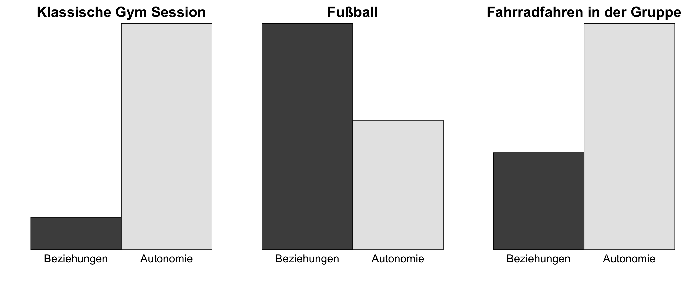

Körperliche Fitness – Sport als Hilfsmittel zur Stressbewältigung im Arbeitsalltag
Den Spaß am Sport (wieder-)entdecken – auch mit vollem Terminkalender!
Anne-Kathrin Kleine
17.10.2022
…Vorstellungsrunde
Ihr Name üëã
Ihr Lieblingssport üèå
Technische Hinweise
- Die Mikrofone sind i.d.R. stumm, um Hintergrundgeräusche zu reduzieren.
- Bitte Zeichen geben, um Wortmeldungen zu signalisieren.
- Die Videoübertragung ist erwünscht. Das erleichtert die Kommunikation und schafft eine produktivere und angenehmere Gesprächssituation.
- Bei technischen Problemen bitte den Chat nutzen.
- Screenshots/Videoaufnahmen vom Seminar sind nicht gestattet.
- Zur Optimierung Ihrer persönlichen Lernerfahrung empfehle ich Ihnen eine aktive Teilnahme am Workshops.
Bitte rufen Sie annekathrinkleine.com auf, gehen Sie zu “Talks and Workshops” und öffnen Sie die Slideshow für den heutigen Workshop
Wie zufrieden sind Sie mit Ihrem aktuellen Sportpensum?
Besuchen Sie diese Seite
Die vielfältigen Funktionen des Sports
Körperliche und mentale Gesundheit
Sport trägt (wenn das Pensum und die Motivation stimmen) zur körperlichen Gesundheit bei:
- Energiestoffwechsel
- Atmungssystem
- Immunsystem
- Herz-Kreislauf-System
- Skelett und Muskulatur
- Nervensystem und Gehirn
Sport wirkt sich außerdem nicht nur positiv auf die körperliche Fitness aus, sondern kann bei der Stressbewältigung, der Reduktion von Ängsten und dem Aufbau eines gesunden Selbstvertrauens helfen.
Soziale Funktion
- Im Sport wird Begegnung und Dialog in Kooperation und angemessenem Wettstreit ermöglicht.
- Im Sport können Menschen neue Verhaltensweisen und den Umgang miteinander spielerisch proben.
- Sport verbindet Menschen durch das gemeinsame Interesse an der Sache.
- Im Sport gibt es Regeln, die positive Wirkungen im Sinne eines an Werten und Normen orientierten Sozialverhaltens entfalten können.
Persönliche Entwicklung
- Sport bietet die Möglichkeit, gezielt an sich zu arbeiten und sich weiterzuentwickeln.
- Die Stärkung bestimmter Eigenschaften wie Disziplin und Durchhaltevermögen kann durch Sport aktiv gefördert werden.
- Sport hilft nachweislich dabei, mit Rückschlägen besser umgehen zu können und langfristige Ziele zu verfolgen.
- Durch Sport können wir lernen, uns selbst besser wahrzunehmen
Ästhetische Funktion
- Es gibt einen bidirektionalen Zusammenhang zwischen einer positiven Sicht auf den eigenen Körper und sportlicher Betätigung.
- Menschen, die regelmäßig Sport treiben, haben generell ein positiveres körperbezogenes Selbstbild.
Sport - nicht ohne Risiken und Nebenwirkungen?
Die negativen Seiten des Sports
- Körperliche Beeinträchtigungen durch Verletzungen
- Wenn Sport in einem exzessiven Umfang betrieben wird, erhöht sich zudem das Risiko für psychische Störungsbilder wie Essstörungen, Substanzmissbrauch sowie Sportabhängigkeit
- Perfektionismus und extreme Ansprüche können die mentale Gesundheit negative beeinflussen
Let’s stay positive!


Was hält Sie Ihrer Meinung nach davon ab, soviel Sport zu machen, wie Sie es sich wünschen?
Besuchen Sie diese Seite
Wann und wie tut Sport eigentlich gut?
Sportmotivation aus der Selbstbestimmungsperspektive: Die drei Grundbedürfnisse
Das Autonomiebedürfnis
Das Autonomiebedürfnis wird durch das Fällen eigener, unabhängiger Entscheidungen gestärkt
Handeln wir im Einklang mit unseren Werten und Normen und fühlen uns nicht oder kaum von aßen bestimmt, ist unser Autonomieempfinden hoch
Das Beziehungsbedürfnis
Das Beziehungsbedürfnis ist erfüllt, wenn wir uns mit anderen verbunden fühlen und von anderen verstanden fühlen
Autonomie-und Beziehungsbedürfnis können, aber müssen nicht, im Widerspruch stehen
Das Kompetenzbedürfnis
Das Kompenezbedürfnis ist erfüllt, wenn wir die Erfahrung machen, dass unser Handeln die gewünschten Effekte hervorbringt
ein guter “Fit” zwischen Fähigkeiten/ Fertigkeiten und sportlicher Herausforderung sorgen für ein hohes Kompetenzempfinden (= nicht zu leicht, nicht zu schwierig!)
Die drei Grundbedürfnisse
Zahlreiche Forschungsbefunde deuten darauf hin, dass die Erfüllung der drei Grundbedürfnisse ausschlaggebend dafür ist…
- ob wir überhaupt überhaupt Sport treiben
und
- ob wir uns mit der Sportart und dem Sportpensum wohl fühlen
Einflussfaktoren auf die drei Grundbedürfnisse im Sport
Das Autonomiebedürfnis
Die Coachin/ der Coach
- generelle Unterscheidung zwischen einem kontrollierenden und einem Autonomie stützenden Coaching-Stil
Vereinsstruktur und Mitgliedschaft
- flexible Mitgliedschaften schaffen höhere Autonomie
Das Autonomiebedürfnis
Individual- vs. Teamsport
- generell mehr Autonomie im Individualsport
Das Umfeld
- wächst der Druck von außen (durch Partner_innen, Eltern, Freund_innen) Sport zu treiben, sinkt das Autonomieempfinden
Wertekonformität
- wenn der Sport, den wir treiben, zu unseren Werten passt, ist unser Autonomieempfinden hoch. Das betrifft die Sportart selbst als auch den Umgang miteinander
Das Beziehungsbedürfnis
Individual- vs. Teamsport
- Stärkere Betonung des Gemeinschaftlichen im Teamsport
Langfristige Bindung
- die Erfüllung des Beziehungsbedürfnisses hängt auch davon ab, ob wir uns langfristig an einen Verein oder eine Sportgruppe binden
Das Kompetenzbedürfnis
Abruf bereits vorhandener Skills/ Talente
- das Kompetenzbedürfnis wird erfüllt, wenn die sportliche Tätigkeit schon vorhandene Stärken und Kompetenzen einbezieht
Erlernen neuer Fertigkeiten
- das Kompetenzbedürfnis wird erfüllt, wenn es uns im Vergleich zu anderen schneller oder genauso schnell gelingt, uns im Sport zu verbessern
Die Bedürfniserfüllung im Sport und unser Wohlbefinden - alles eine Frage der Kongruenz?
Die Kongruenzregel
- generell gefallen uns Tätigkeiten besser, die mit unseren individuellen Bedürfnissen, Werten und Zielen im Einklang stehen
- z.B. bei stark ausgeprägtem Autonomiebedürfnis ist es wichtig, dass die sportliche Aktivität dieses Grundnedürfnis erfüllt, damit uns der Sport zufrieden macht
Ego vs. Task Involvement
- ein Klima, das Ego Involvement fördert, ist durch einen Leistungsfokus charakterisiert - Wettkampf, sozialer Vergleich und öffentliche Beurteilung stehen im Vordergrund
- ein Klima, das Task Involvement fördert, ist durch einen Fokus auf die Aufgabe charakterisiert; die Lernerfahrung und die die Aneignung neuer Fertigkeiten stehen im Vordergrund
Der Weg zum Sport
Besteht ein Bedürfnis nach Veränderung?
- Erst einmal muss Ihnen deutlich sein, ob Sie gerne mehr Sport treiben wollen
- Ist das der Fall, setzen Sie sich im nächsten Schritt ganz konkrete Ziele
Konkrete Ziele setzen
- Es gibt keine richtigen oder falschen Ziele, sondern nur individuell passende oder weniger passende Ziele
Ziele sollten so konkret wie möglich sein. Z.B.:
- weniger Rückenschmerzen
- mehr Beweglichkeit
- einen Marathon laufen
- einen Marathon in unter 4 Stunden laufen
Hindernisse identifizieren und Lösungen finden
- Denken Sie an äußere (z.B. das Wetter, die Kinder, der Arbeitsdruck) und innere Barrieren (z.B. kein Bock)
Spoken word üó£Ô∏è
Hören Sie einander gut zu, denn die Antworten werden in der nächsten Runde noch relevant.
Denken Sie an den schönsten Moment beim oder kurz nach dem Sport, den Sie in den letzten 6 Monaten erlebt haben.
Was hat diesen Moment so besonders gemacht?
Denken Sie jetzt an eine positive Empfindung beim oder kurz nach dem Sport, die Sie schon öfter erlebt haben.
Nennen Sie die Sportart und versuchen Sie, diese positive Empfindung zu beschreiben.
Falls Ihnen das schwerfällt, beschreiben Sie eine Sportart, die Sie früher mochten. Das kann weniger als ein Jahr her oder eine Erfahrung aus Ihrer Kindheit sein.
Wie finde ich eine Sportart, die zu mir passt und mich zufrieden macht? ️
Der Weg zum “richtigen Sport” für mich
- Generell gilt, dass Sportarten, die alle drei Grundbedürfnisse (Autonomie, Beziehungen, Kompetenz) erfüllen, am glücklichsten machen
- erfüllt ein Sport unsere Grundbedürfnisse optimal, sind wir intrinsisch motiviert - es macht uns zufrieden, dieser Tätigkeit nachzugehen
- Sport, der vor allem extrinsisch motiviert ist (schöner Körper, Anerkennung) macht weniger zufrieden
z.B. wurde herausgefunden, dass Tae Kwon Do mit einem stärkeren Zugewinn an Zufriedenheit assoziiert ist als beispielsweise Aerobic oder Gewichtheben
Der Weg zum “richtigen Sport” für mich
- Es ist generell wichtig, alle Grundbedürfnisse im Blick zu haben und mit individuellen Werten und Zielen, aber auch der individuellen Lebensgestaltung in Einklang zu bringen
Hier einige fiktive Beispiele zur Illustration:
Ziele formulieren, Hindernisse antizipieren, Lösungen finden
Zu zweit: Reden Sie miteinander…
- Was ist Ihr persönliches sportliches Ziel?
- das Ziel soll konkret und realistisch sein
- formulieren Sie ein Ziel für heute, morgen oder diese Woche und ein Ziel, das Sie in den nächsten 6 Monaten verwirklichen können
- Welche positiven Gefühle verbinden Sie mit dem Ziel?
- reden Sie auch darüber, inwieweit das Ziel im Einklang mit Ihren Werten und Ihrer Persönlichkeit steht
- Welche Hindernisse werden Ihnen begegnen?
- schildern Sie ein oder zwei Haupthindernisse
- diskutieren sie mögliche Lösungen - es geht nicht darum, für jedes Problem eine Lösung zu finden